Стрижка под пластинку
спокойно и точно
Барбершоп в центре, где играет винил: стрижки от 1 100 ₽, борода и королевское бритьё. Мойка и укладка — в цене стрижки. Ежедневно с 9 до 21.
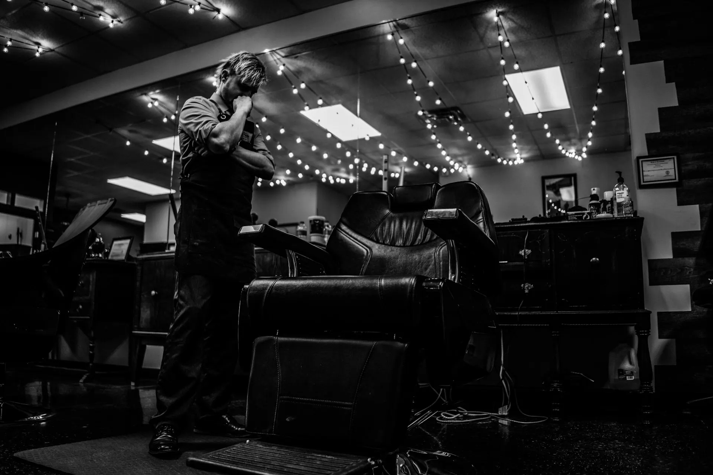
Винилул. Сурикова, 12 (демо), КрасноярскЦена — по мастеру
Три версии каждого трека: выберите уровень мастера — и прайс покажет вашу цену.
Бонус-треки
- ★1Первая стрижка1 000 ₽
Для тех, кто приходит к нам впервые.
- ★2Отец и сынот 2 300 ₽
Любая взрослая стрижка для отца и любая стрижка для сына 5–7 лет.
- ★3Сертификат
Подарочный сертификат в «Винил» — на любую сумму, в приложении или у администратора.
Из жизни Винила
Пластинки, гитара и то, ради чего приходят, — чёткая форма.
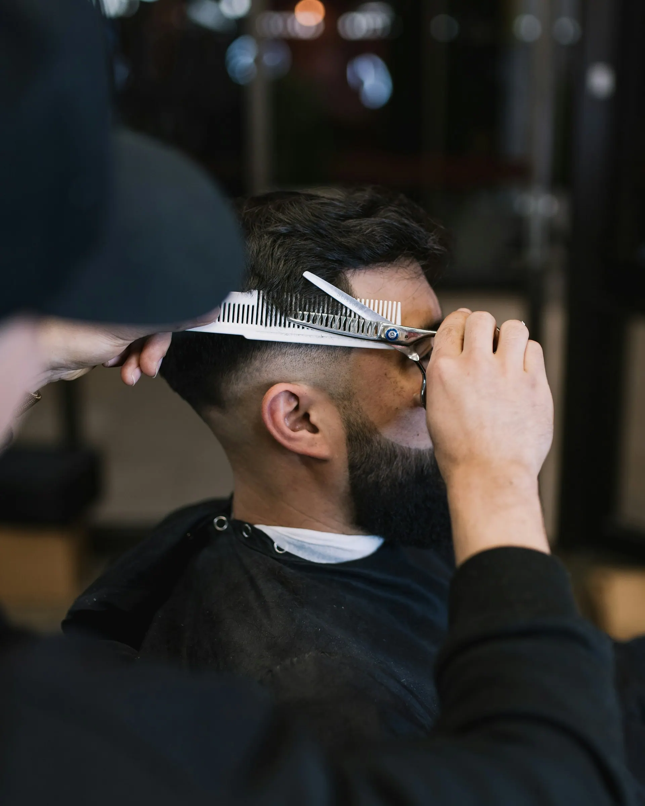
LP 01фейд и контур 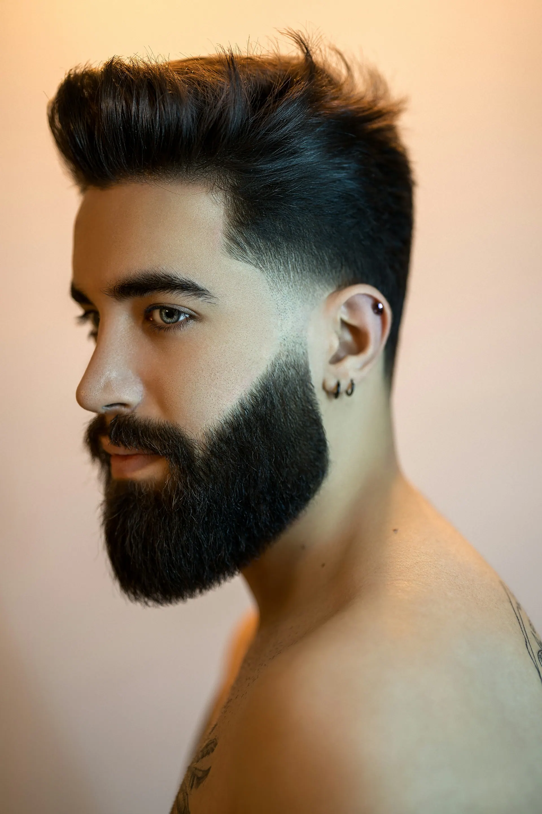
LP 02борода по форме 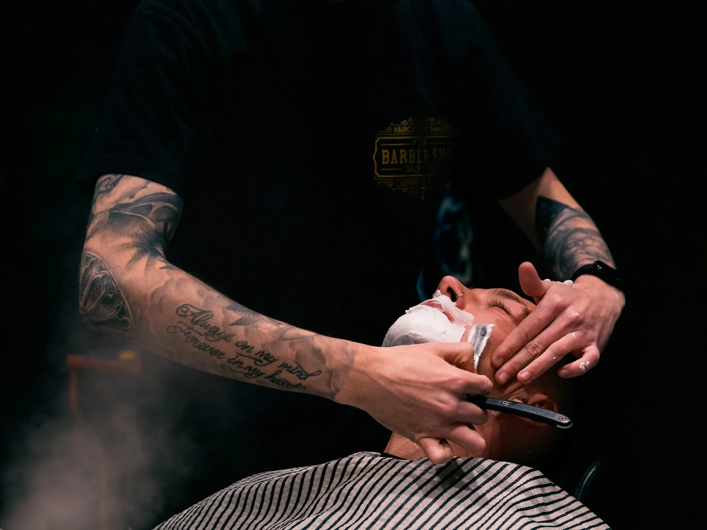
LP 03королевское бритьё 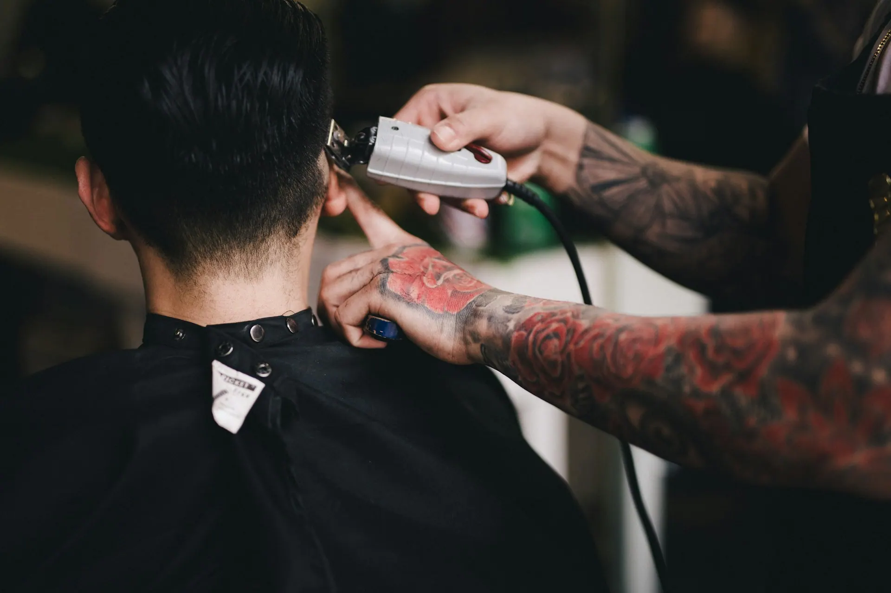
LP 04переход с нуля 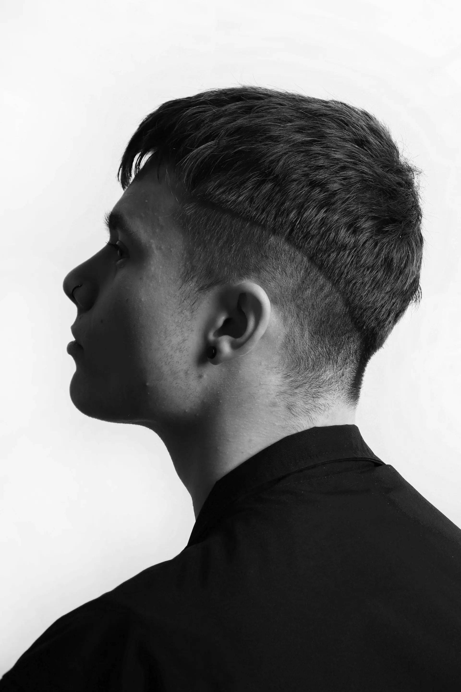
LP 05чёткий силуэт 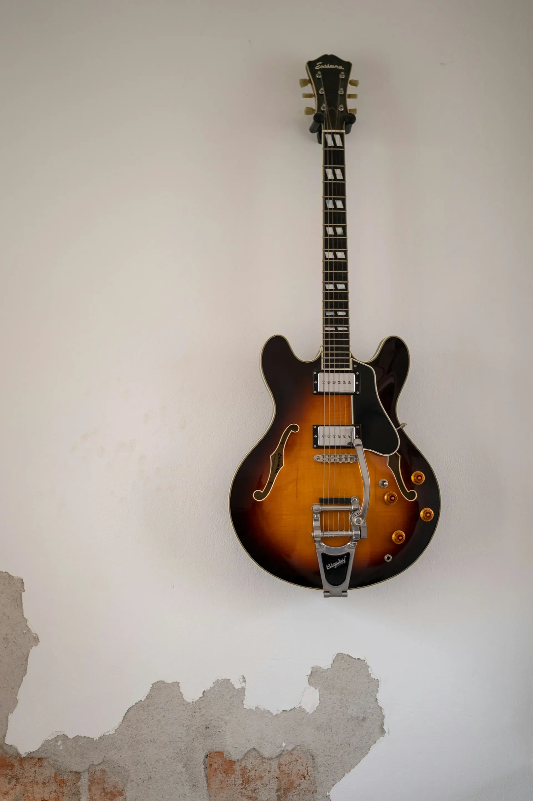
LP 06гитара живёт тут 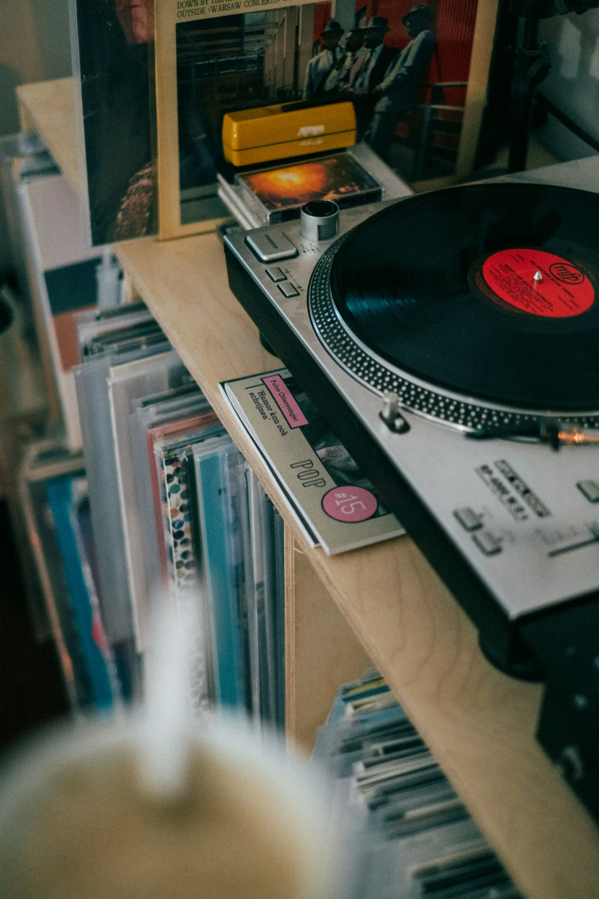
LP 07играет винил 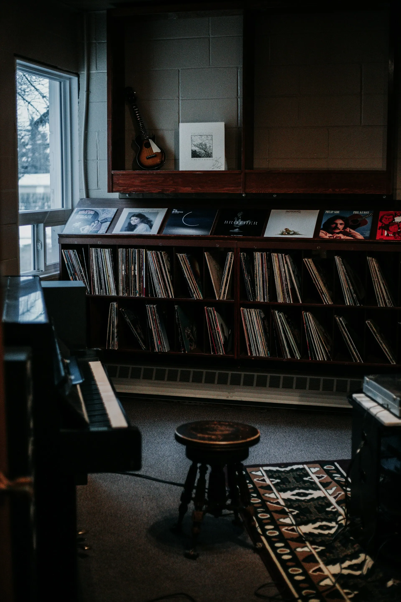
LP 08полка с пластинками
Состав группы
Четыре барбера, три уровня. Записаться можно к конкретному мастеру.
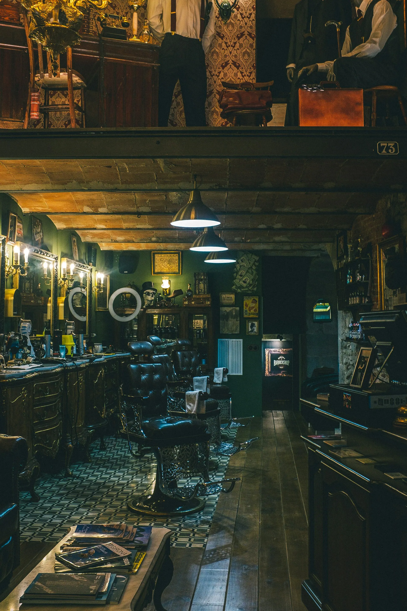
-
Бренд-барбер · 64 отзыва
Марк
Марк подобрал форму под мою голову — первый раз не пришлось объяснять дважды.Артём, 2ГИС (демо)
Записаться → -
Бренд-барбер · 41 отзыв
Тимур
Тимур делает бритьё так, что засыпаешь в кресле.Сергей, 2ГИС (демо)
Записаться → - Старший барбер · 88 отзывов Денис Записаться →
-
Барбер · 12 отзывов
Глеб
Аккуратно, без спешки, дал советы по уходу.гость, 2ГИС (демо)
Записаться →
Винил в телефоне
Запись за минуту на сайте, приложение с бонусами и историей стрижек, бот в Telegram: напомнит о записи накануне и за два часа.
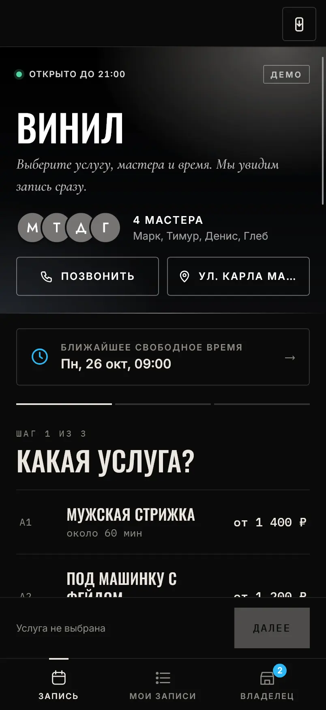
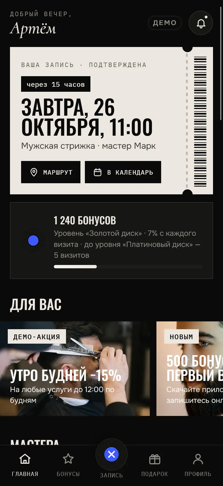
Что пишут гости
- 4,9212 оценок
на 2ГИС (демо) - 4,896 оценок
на Яндекс Карты (демо)
Пришёл без идеи, ушёл с формой, которая держится месяц. Марк всё объяснил и предложил, как укладывать дома.
Королевское бритьё с горячим полотенцем — лучший час недели. Играла пластинка, никто не торопил.
Ходим с сыном по «Отец и сын». Ребёнок сидит спокойно, мастер с ним разговаривает.
Записался онлайн за минуту, бот напомнил за два часа. Фейд ровный, борода по форме.
★Билет · вход по записи
Ваше кресло ждёт
- Где
- ул. Сурикова, 12 (демо), Красноярск
- Когда
- Ежедневно 09:00–21:00
- Цена
- от 1 100 ₽
Вопросы
Чем отличаются барбер, старший и бренд-барбер?
Опытом и набором техник: бренд-барберы берут сложные формы, бритьё головы и бороду ваксингом. Цена зависит от уровня — переключите его в прайсе.
Мойка головы входит в стрижку?
Да. В стрижках машинкой мойка бесплатная, в модельных — мойка и укладка.
Стрижёте детей?
Да, мальчиков 5–7 лет — от 1 200 ₽. Вместе с папой — «Отец и сын», от 2 300 ₽.
Как записаться?
Онлайн на сайте, в приложении, в Telegram-боте или по телефону +7 900 000-00-00 (демо). Можно выбрать мастера.
Как оплатить?
Наличными, картой, переводом или по QR-коду.
Контакты
- Адрес
- ул. Сурикова, 12 (демо), КрасноярскВход с улицы, вывеска с пластинкой
- Часы работы
- Ежедневно 09:00–21:00
- Телефон
- +7 900 000-00-00
ул. Сурикова, 12 (демо), Красноярск